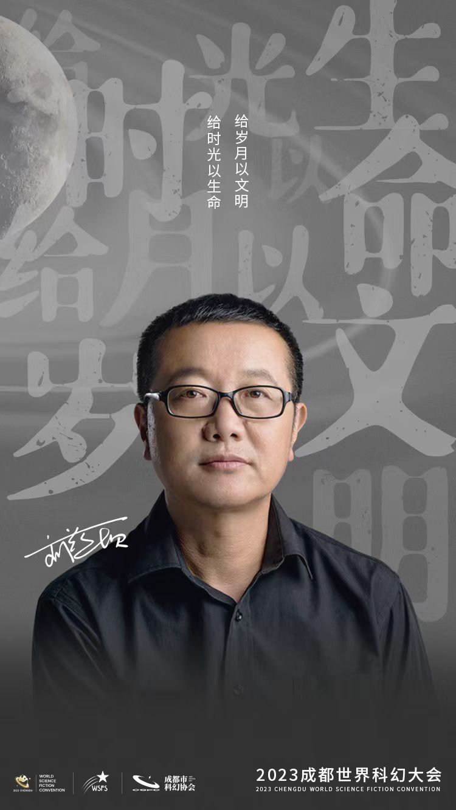
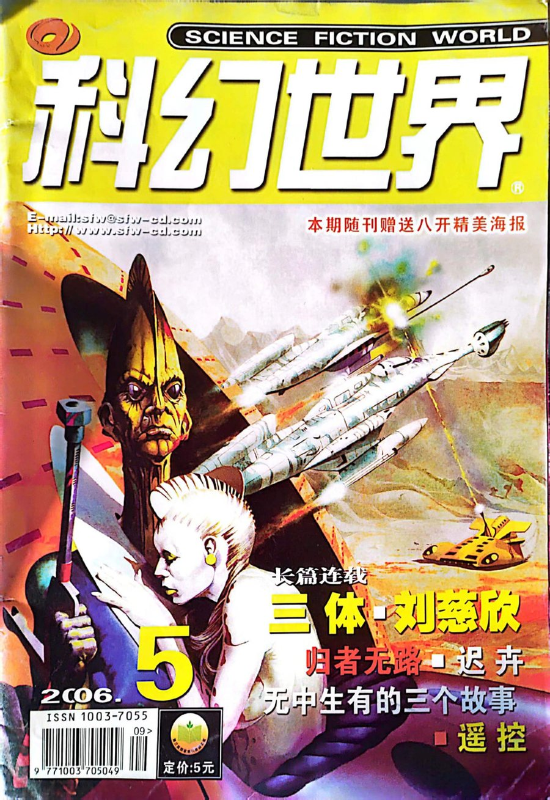
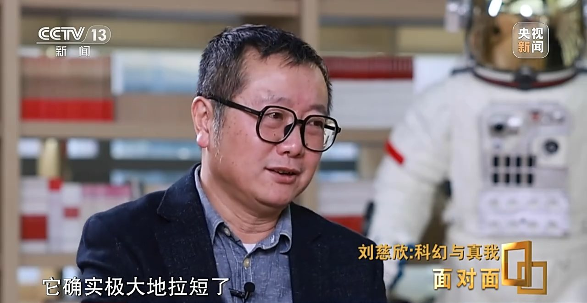
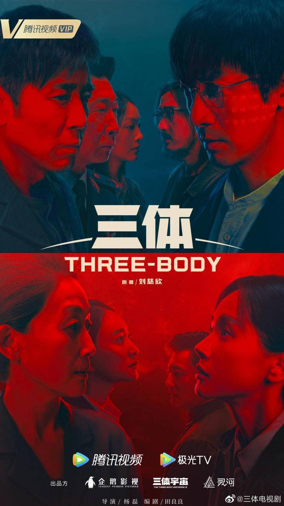
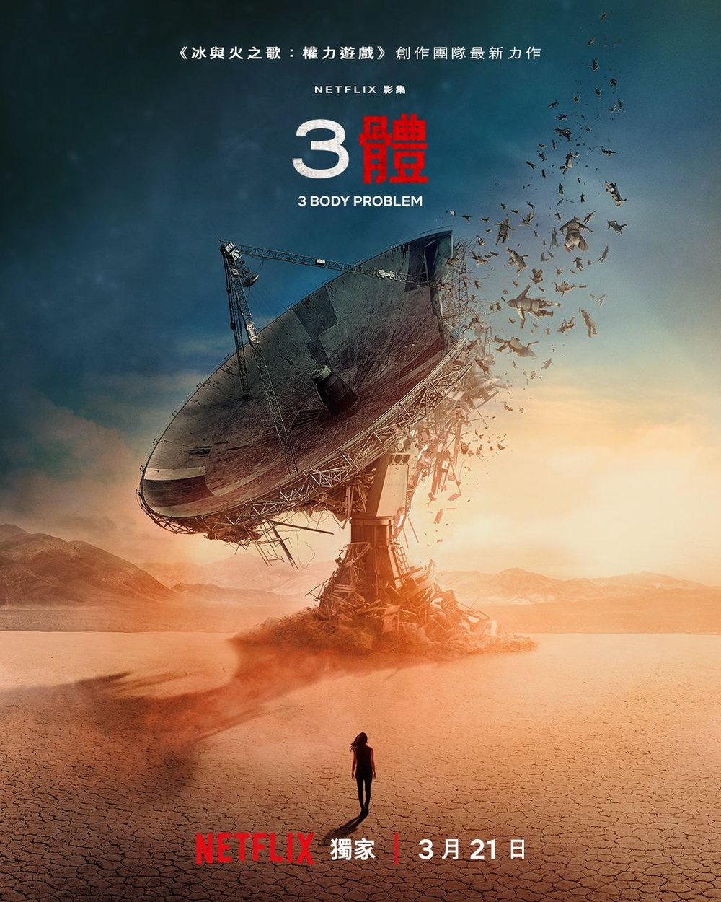
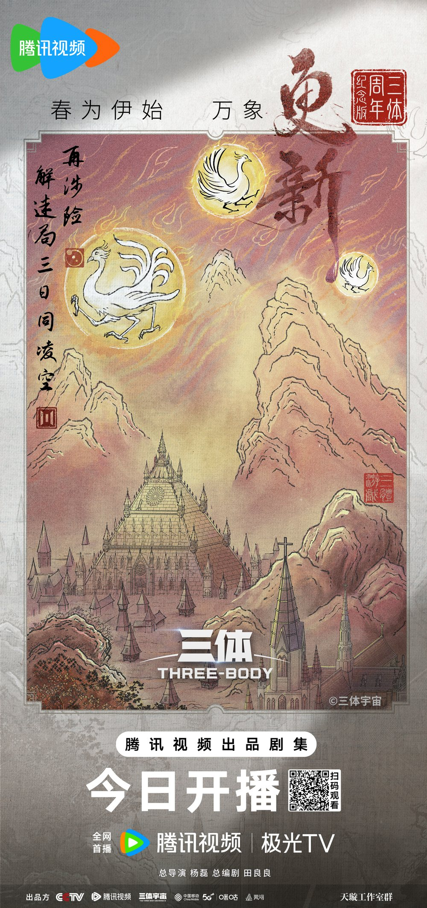
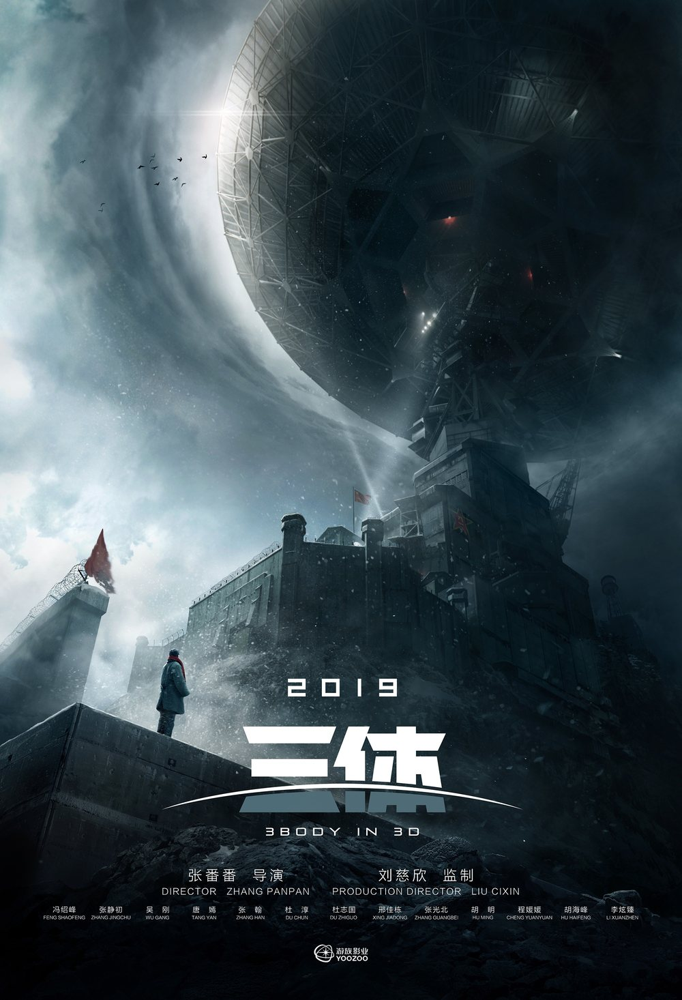
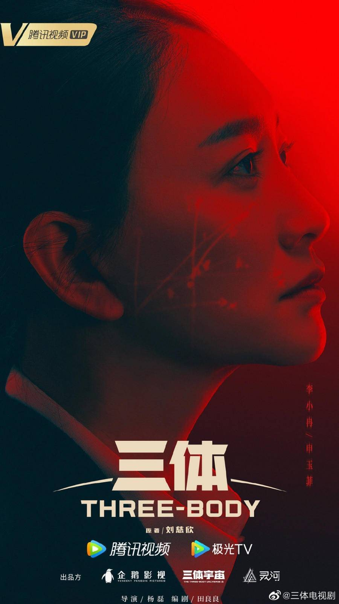
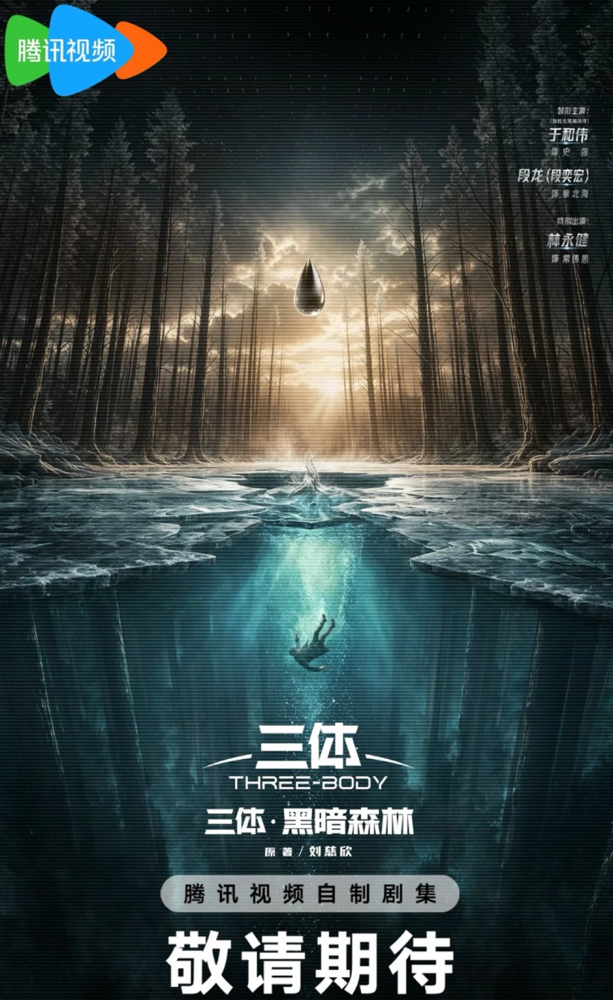
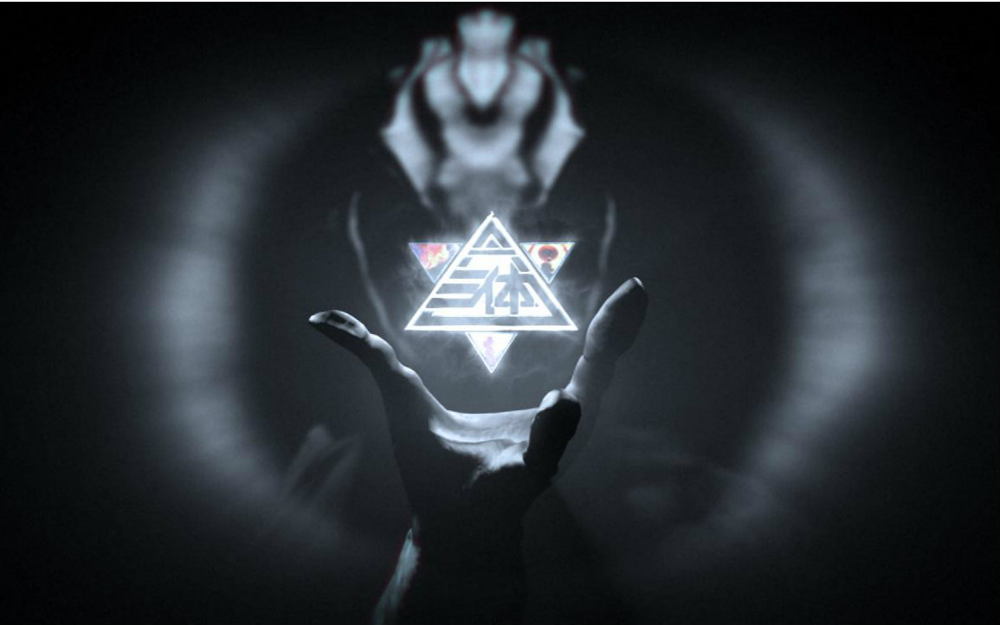

卷壹 · 2006
三体 The Three-Body Problem
人类第一次知道：我们并不孤独，也从未安全。
疯狂年代的一声叹息，落进大兴安岭深处的红岸基地。纳米科学家汪淼在离奇死亡与眼中的倒计时之间，被推入一款名为《三体》的虚拟游戏；而游戏背后，一场跨越四光年的文明博弈才刚刚开局。
「不要回答！不要回答！！不要回答！！！」

在太行山深处的小城阳泉，一位发电厂的计算机工程师，用夜班间隙为整个宇宙编写了历史。
刘慈欣，1963 年生于北京，成长于山西阳泉，曾任娘子关发电厂计算机工程师。电厂群山环绕、云层低垂，他一边维护机组，一边仰望星空——这支笔后来被称为「以一己之力将中国科幻提升到世界水平」。
2006 年 5 月，《三体》在《科幻世界》杂志开始连载，单行本次年由重庆出版社出版。2015 年，英文版（刘宇昆 译）摘得第 73 届雨果奖最佳长篇小说奖——亚洲作家第一次站上世界科幻的最高领奖台。此后《黑暗森林》《死神永生》相继问世，被译成三十余种语言，连美国前总统奥巴马也读完全书并写邮件「催更」。
而这一切的起点，不过是《科幻世界》上一部连载小说，和一张 5 元钱的定价。


从雷达峰的一声呼叫，到宇宙尽头的一块墓碑。三部书，一部文明的《史记》。
卷壹 · 2006
人类第一次知道：我们并不孤独，也从未安全。
疯狂年代的一声叹息，落进大兴安岭深处的红岸基地。纳米科学家汪淼在离奇死亡与眼中的倒计时之间，被推入一款名为《三体》的虚拟游戏；而游戏背后，一场跨越四光年的文明博弈才刚刚开局。
「不要回答！不要回答！！不要回答！！！」
卷贰 · 2008
两条公理，推出宇宙最冷的真相。
三体舰队已在途中，四百年倒计时开始。思维透明的敌人不可欺骗，人类便选出四位面壁者，把战略藏进大脑。面壁者罗辑以宇宙社会学两公理推演出黑暗森林法则，并用一记「咒语」，为地球赢得半个世纪。
「宇宙就是一座黑暗森林，每个文明都是带枪的猎人。」
卷叁 · 2010
从末日之战，写到时间与空间的尽头。
执剑人交接、引力波广播、掩体纪元、二维化——太阳系的命运在一张「小纸片」前尘埃落定。故事驶向 647 号小宇宙与回归运动，也把爱、责任与生存的悖论，写成了宇宙尺度的审判庭。
「弱小和无知不是生存的障碍，傲慢才是。」
书封为 Tor Books 英文版 · Ⅰ 刘宇昆 译 / Ⅱ Joel Martinsen 译 / Ⅲ 刘宇昆 译
《三体》真正的的主角不是某个人，而是这些冷峻的概念。它们像一台台思想实验装置，把文明放进极端环境里运转。
THE DARK FOREST
生存是文明的第一需要；文明不断增长和扩张，而宇宙中的物质总量保持不变。宇宙是一座黑暗森林，每个文明都是带枪的猎人——暴露，即毁灭。
CHAIN OF SUSPICION
星际之间，善意无法被验证：「我不知你善恶，你也不知我如何揣度你。」猜疑链条条相扣永无尽头，而技术爆炸随时让弱者翻身——于是先开枪，成了唯一的「理性」。
SOPHON
把一颗质子在低维展开、蚀刻电路、再折回高维，便得到一台比整个文明更聪明的计算机。两颗智子先行抵达地球，锁死基础物理，让四百年后的技术天花板一眼可见。
THE DROPLET
强互作用力材料铸成的探测器，表面绝对光滑，映照万物。末日之战中，一颗水滴将人类两千余艘战舰的舰队摧毁殆尽——它是一份「礼物」，也是一句宣告。
WALLFACER PROJECT
三体人思维透明，无法理解谋略。联合国选出四位面壁者，真实战略只存在于大脑之中，公开的一切皆为表演。四个人的独角戏，赌上的是整个文明的存亡。
DUAL VECTOR FOIL
歌者文明信手抛出的清理品。三维空间向二维跌落，太阳系连同它全部的历史，被压成一幅绝对精确、也绝对死寂的巨画。毁灭如此轻盈，轻得像一张便签。
CURVATURE PROPULSION
不动飞船，只动空间：把船尾的曲率「熨平」，让空间回弹的涟漪推着飞船触及光速。航迹在宇宙中留下永不愈合的死线——但对逃亡者而言，光速就是方舟。
DEHYDRATION
乱纪元来临，三体人排干水分卷成一张皮储存起来；恒纪元再现，再浸入湖水苏醒。文明在恒星的无常中一次次毁灭与重生，生存本身成了唯一的哲学。
宇宙社会学两公理 · 推论
宇宙就是一座黑暗森林，每个文明都是带枪的猎人，像幽灵般潜行于林间……他必须小心，因为林中到处都有与他一样潜行的猎人。如果他发现了别的生命，能做的只有一件事：开枪消灭之。
—— 罗辑，《黑暗森林》
《三体》把普通人一次次放到决定文明命运的坐标上——然后冷静地记录他们的选择。
天体物理学家 · ETO 统帅
目睹至暗年代后，她在红岸基地两次按下发射按钮，把地球坐标射向群星。「我点燃了火，却控制不了它。」
纳米材料科学家
《三体》第一部的主人公。眼中的宇宙倒计时、三体游戏的玩家、「古筝行动」的执行者——一个被迫看见真相的普通人。
面壁者 · 首任执剑人
从玩世不恭到独坐雪原，他以黑暗森林威慑压住两个世界六十二年，最后交代的是一句：「把字刻在石头上。」
刑警 · 「大史」
不讲「科学」却屡屡救场的老刑警。麦田里那句「虫子从来没有被战胜过」，是全书最粗粝也最提气的一口酒。
太空军政委 · 「自然选择」号
用一生伪装只为一件事：为人类保存逃亡的火种。父亲的「要多想」，他想了一辈子；临终只有一句「没关系的，都一样」。
阶梯计划 · 送入敌营的大脑
一颗大脑被送进三体舰队，在敌国靠三个童话为人类偷运情报。与程心重逢时他说：「宇宙很大，生活更大。」
航天工程师 · 两度抉择者
两次被推上决定人类命运的位置，两次因爱而「失败」，却也两次替文明保住了另一种答案。她是圣母，也是我们自己。
PIA 局长 · 星环城领袖
「我们只送大脑」「前进！前进！！不择手段地前进！！！」——全书最危险的男人，几乎每次都对，唯独最后一次选择了放手。
从红岸的一声呼叫到回归运动，四百年跌宕，被压缩成七行年表。
天体物理学家叶哲泰死于批斗。他的女儿叶文洁从此对人类文明埋下问号。
大兴安岭雷达峰上，叶文洁发现太阳可以充当电波放大器，一次试验让人类的呼喊第一次有了宇宙音量。
四光年外的三体世界回信警告，恳求地球沉默。叶文洁望了一眼朝阳，按下了发射键——坐标暴露。
科学家接连自尽，汪淼卷入《三体》游戏与「古筝行动」。人类第一次直面：他们来了。
三体舰队启航，面壁计划与阶梯计划启动。倾尽全球之力建造的联合舰队，在「水滴」面前一夜清零；罗辑在雪地工程中扣动扳机，建立黑暗森林威慑。
一只手悬在两个世界的按钮上，恐怖平衡换来了技术与知识的交换。交接给程心后十五分钟，威慑崩塌。
「万有引力」号广播坐标，太阳系彻底暴露。人类躲进木星背后，而歌者只是随手掷出了二向箔——太阳系成为一幅画。
程心与关一帆避入云天明赠送的小宇宙，读到归零者的召唤：把质量还给大宇宙，让时间重新开始。「把字刻在石头上。」
「给岁月以文明，而不是给文明以岁月。」
— 《三体》
「死亡是唯一一座永远亮着的灯塔，不管你向哪里航行，最终都得转向它指引的方向。」
— 《三体 · 死神永生》
「失去人性，失去很多；失去兽性，失去一切。」
— 《三体 · 死神永生》
「我们都是阴沟里的虫子，但总还是得有人仰望星空。」
— 《三体》
「前进！前进！！不择手段地前进！！！」
— 托马斯·维德
「把字刻在石头上。」
— 罗辑，《死神永生》
给所有文明的备忘录
藏好自己，做好清理。
—— 《三体 · 死神永生》
同一个黑暗森林，被不同的镜头反复讲述。

杨磊执导，张鲁一、于和伟、陈瑾主演。以近乎「教科书级」的忠实改编，把红岸基地与三体游戏拍成了中国科幻剧的代表作。

《权力的游戏》主创 David Benioff 与 D.B. Weiss 操刀，刘宇昆参与顾问。全球视野重述三体故事，让「倒计时」爬上了全世界的屏幕。

从「古筝行动」的高潮直接开局，以动画笔触续写黑暗森林。这张「三日凌空」国风纪念海报，恰是三体世界最凶险的天象。

张番番执导、冯绍峰主演的影版几经周折始终未与观众见面，海报里那轮压顶的巨月，成了流行文化的一桩悬案。


